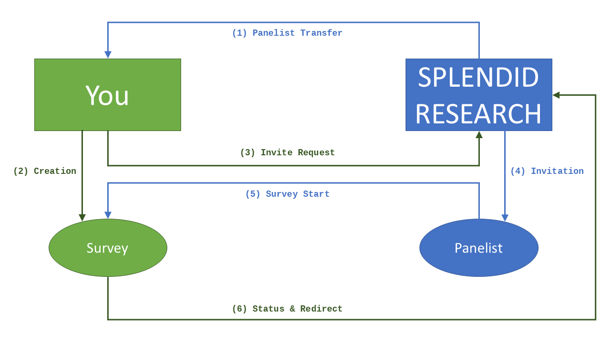

Welcome
Hello There!
This documentation provides information on how to connect to SPLENDID RESEARCH via API.
It aims to include both general and technical principles and processes.
By following the steps described below you will be able to gain access to our Online Access Panels.
Do not hesitate to contact us if you are having any questions or remarks about this documentation.
Integration Process
Connecting to our panels is very easy! You just need to consider and implement 4 methods:
-
Panelist Transfer
You need to gain access to our panelbase to be able to target and select panelists. -
Invite Requests
You can request new invitations via API. -
Status
Every participant who finishes a survey should get a final status which will be transmitted to us. -
Redirects
After finishing a survey the panelist should be redirected to us again depending on the status he got.
Workflow Chart
As you see there is really not much needed to get the API to work:

Other Integrations
Your API approach looks different from what is described above?
No problem! Feel free to contact us and we'll try to find a way to collaborate.